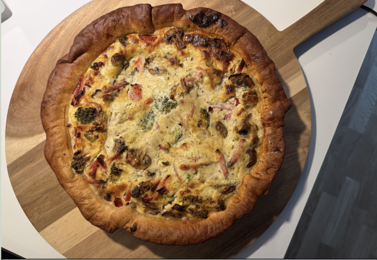

Undgå madspild i hverdagen

Planlæg dine indkøb og brug dine rester
Når rester og råvarer står gemt bagerst i køleskabet, er de nemme at glemme. Stil derfor det, der skal bruges først, forrest. Et hurtigt kig i køleskabet, fryseren og køkkenskabet kan også give dig idéer til, hvad du kan lave, inden du køber ind.
Tag udgangspunkt i det, du har. Planlæg et par måltider ud fra de råvarer, der snart skal bruges. Køb ind med en liste. Brug gerne tilbudsaviser eller indkøbsapps til at finde tilbud på varer, du allerede har planer om at bruge. Tilbered de portioner, du har brug for. Bliver der mad tilovers, kan du bruge den til frokost, i madpakken eller som en del af næste dags aftensmad.
Opbevar maden, så den holder længere
Nogle madvarer holder sig bedst i køleskabet, mens andre skal stå tørt, mørkt eller køligt. Følg opbevaringsanvisningen på emballagen, og tjek, om den ændrer sig, når varen er åbnet. Brød, rester og råvarer, du har svært ved at nå at bruge, kan du ofte fryse ned i mindre portioner.
Flere grøntsager og krydderurter egner sig også til fryseren. Hvidløg, chili og friske krydderurter kan hakkes og fryses i små portioner, som er nemme at tage frem til madlavningen. Tomater, peberfrugt og squash kan skæres i stykker og fryses til fx kødsovs eller suppe. De bliver blødere efter optøning og egner sig derfor godt til varme retter. Gulerødder, selleri og broccoli kan skæres i mindre stykker, koges kort og køles hurtigt af, før de fryses. Så er de klar til fx supper og gryderetter.

Ugens måltid
Koteletter i fad med grøntsager

Ugens måltid
Tærte med grøntsager